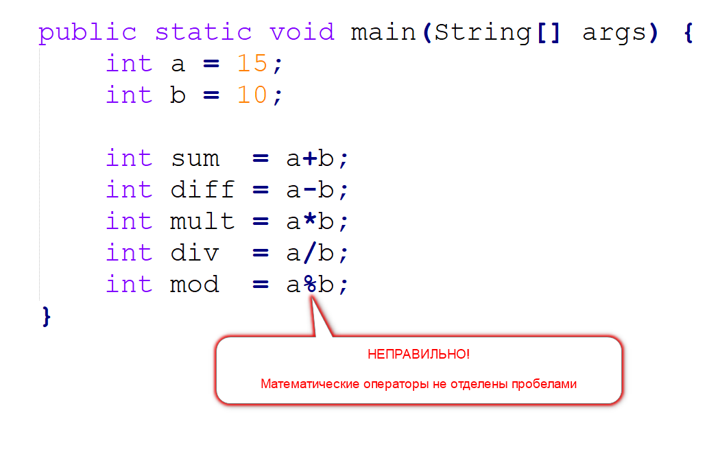
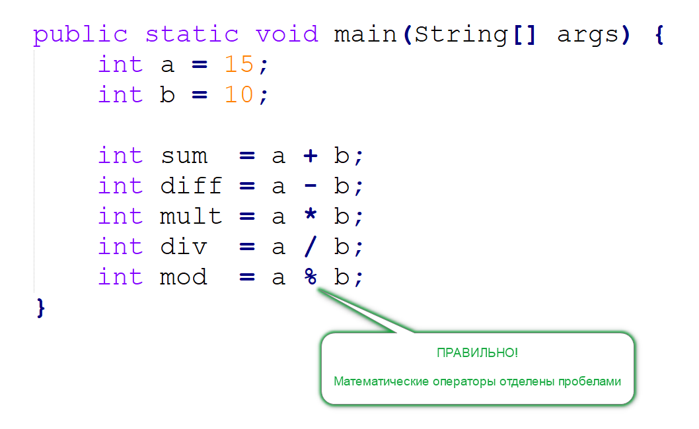
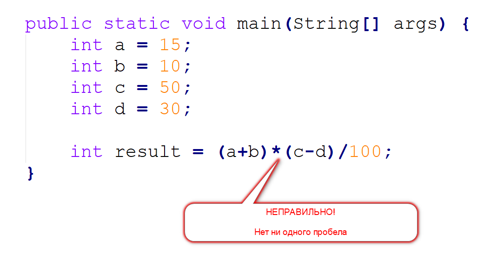
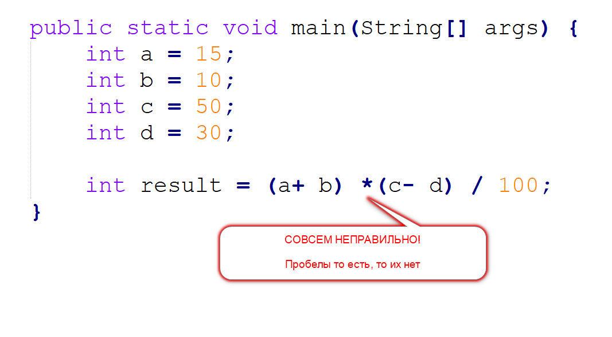
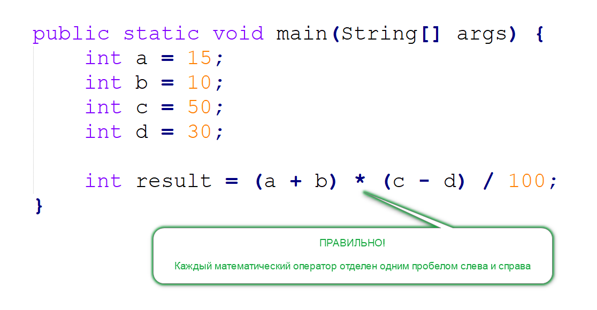

.
.
Java предлагает нам 5 математических операторов:
+ сложение
- вычитание
* умножение
/ деление
% деление по модулю (остаток от деления)
Про эти операторы нужно помнить, что все они - бинарные операторы. А это значит, что при использовании этих операторов в своих выражениях
Вы должны отделять каждый оператор одним пробелом слева и справа
То есть, вот так - неправильно:
А вот так - правильно:
Особое внимание обратите на то, что пробелами должен отделяться каждый оператор отдельно. Поэтому если ваше выражение большое, и операторов в нем много, то каждому оператору нужны свои пробелы.
То есть, вот так - неправильно, потому что пробелов здесь нет вообще:
Вот так:

Cовсем неправильно! Это настолько неправильно, что даже глаза иногда хотят выйти из орбит.
А все потому, что где-то вы поставили пробел, а где-то нет.
Программисты могут простить вам любые ошибки, кроме нарушения единообразия .
А в этом случае, у вас все хорошо - каждый математический оператор получил свои пробелы:

В заключение стоит сказать, что я вам немного соврал, так как математических операторов в Java не 5, а 6.
Есть еще Унарный минус, который как раз требует, чтобы после него пробела не было.
Но об этом вы узнаете в отдельной ошибке.